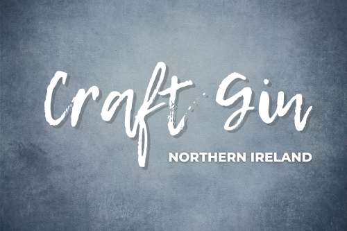

Places to go
Craft Gin unlike any other
Discover the finest gin Northern Ireland has to offer
From across Northern Ireland
Select Region
Antrim
Down
Tyrone
Fermanagh
Derry
Type
Gin Producers
Gin Joints
Show All